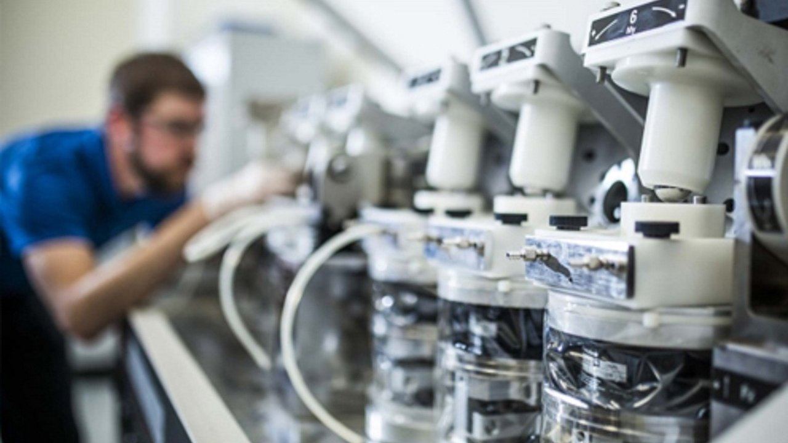

삼성D, 12인치 RGB OLEDoS에 3000억 투자 단행

삼성디스플레이가 12인치 웨이퍼 기반 RGB OLEDoS(OLED on Silicon) 양산 라인 구축에 약 3,000억 원을 투자하기로 결정했다. OLEDoS는 실리콘 웨이퍼 위에 마이크로미터(㎛) 단위 크기의 OLED 픽셀을 직접 증착하는 기술로, 초고해상도·초고휘도가 요구되는 XR(확장현실) 헤드셋·AR 안경 등의 핵심 디스플레이 소자다.
12인치(300mm) 웨이퍼 적용은 현재 주류인 8인치 대비 생산 면적을 약 41% 확대할 수 있어 원가 경쟁력과 생산성이 동시에 향상된다. 삼성디스플레이는 이를 통해 연간 OLEDoS 생산 능력을 기존 대비 두 배 이상 끌어올릴 계획이다. 양산 목표 시점은 2027년 하반기로 알려졌다.
OLEDoS는 일반 OLED와 달리 RGB 방식으로 적·녹·청 픽셀을 별도 증착하기 때문에 고순도 유기발광재료(EML)와 정밀 마스크(FMM) 기술이 핵심이다. 전 세계 OLED 발광재료 시장 규모는 2025년 22억 달러를 돌파한 것으로 집계됐으며, OLEDoS 확산에 따라 고성능 재료 수요가 추가로 급증할 것으로 예상된다.
국내 OLED 소재 공급 기업들의 수혜가 예상된다. 덕산네오룩스·이녹스첨단소재·솔루스첨단소재 등은 삼성디스플레이에 발광층·정공수송층 재료를 공급하는 주요 파트너사다. 특히 이녹스첨단소재는 최근 오창호 전 LG디스플레이 대형사업부장을 영입하며 기술 역량 강화에 박차를 가하고 있다.
삼성디스플레이는 갤럭시S27 프로·울트라에 최신 M16 OLED 패널을 공급하는 등 스마트폰용 OLED에서도 기술 리더십을 이어가고 있다. M16 패널은 전작 대비 최대 휘도를 40% 개선한 것으로 알려졌으며, 저전력 기술과 색재현성 향상이 핵심 특징이다. OLEDoS 기술은 M 시리즈에서 축적한 발광재료·공정 노하우를 바탕으로 한다.
경쟁사 동향도 주목된다. LG디스플레이는 8인치 WOLED(백색 OLED) 방식의 OLEDoS를 애플 비전프로에 공급 중이며, Sony·BOE도 마이크로디스플레이 시장에 진입해 있다. 삼성디스플레이의 12인치 RGB OLEDoS는 색순도와 에너지 효율 면에서 WOLED 방식을 압도한다는 것이 업계의 평가로, 향후 XR 플랫폼 표준 경쟁에서 주도권을 노리는 포석이다.
소재 측면에서는 PSF(Patternable Solution-processed OLED Film) 기술과의 경쟁 구도도 형성되고 있다. PSF는 잉크젯 방식으로 RGB 픽셀을 인쇄하는 차세대 공법으로 재료 효율이 높지만 균일성 확보가 과제다. 삼성디스플레이의 대규모 증착 방식 투자는 당분간 기존 FMM 기반 공정이 주류를 유지할 것임을 시사한다.
장비 측면에서는 캐논토키(일본)의 대형 OLED 증착기 수요가 증가할 전망이다. 12인치 웨이퍼 대응 증착 장비는 기존 8인치 장비와 완전히 다른 규격으로, 새로운 수주 기회가 열린다. 국내 장비 기업 중 에스에프에이·선익시스템 등도 관련 장비 개발에 참여하고 있어 수혜 가능성이 있다.
FCC(미국 연방통신위원회)가 광통신 장비 수입 규제를 검토 중인 것도 XR·AI 인프라 투자와 맞물려 OLEDoS 수요를 자극하는 요인이 될 수 있다. AI 데이터센터와 엣지 컴퓨팅 확산이 고해상도 디스플레이 수요를 견인하는 구조 속에서, 삼성디스플레이의 이번 투자는 장기적 성장 동력 확보 차원으로 해석된다.
업계 애널리스트는 '12인치 OLEDoS 양산은 마이크로디스플레이 시장 게임체인저가 될 것'이라며 '삼성이 먼저 12인치 양산 체계를 갖추면 원가·공급 능력에서 압도적 우위를 점하게 되고 애플·메타·구글 등 주요 XR 플랫폼 기업의 전략적 파트너로 자리잡을 수 있다'고 분석했다. 소재·장비 밸류체인 전반의 수혜가 기대된다.